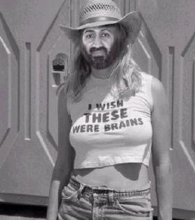

There's virginity in B'ville as long as Baskets away Hash
Run #941, April 26, 2004
Hare: Oozing the syphilitic one
Weather: Torrential downpours on otherwise a balmy spring eve
Location: B'ville aye!
Present: Tinker Bell, Fwangi Boner, WIPOS, BondoJovi and newbee Hourly Rate
Mismanagement: Jake and Ben
Write-Up:
Most of the oldies stayed away due to one of the following reasons:
1. it was NOT raining, it was fooking raining cats and dogs
2. it was an Oozing run, too much of a challenge on a Mon nite
3. there is NO such thing as virgin trail in B'ville
4. given the average age of the absentees(ie. DrWho, Basket and
Async) was above 50, they had their annual colonscopies scheduled that nite
5. the final of American Idol was on.
Well, whatever the reason, the hare set this one live and was away before the pack showed up leaving instructions to the boner. The rest, as they say, is history. Here is one eloquent account: It¹s hard to find much to praise about our Oozing SD (ask Trail Hoover), but on 26 April 2004 he outdid himself. Raging Queen of Beers (may his equipment forever be limp) had blown us off for some Boston white trash. At the last minute Oozing (in his own words) "stepped up to the wicket" and hit 100 overs. He found some of Rhode Island¹s best 99% virgin shiggy, mud, slime, bullbriar, waist deep torrents, and laid a trail with such finesse that none of the pack was aware of the cold and the drizzle and the fact that Bondo was on the run. The tricky back-checks and the circle jerks were but child¹s play. It was, however, the beer stop that showed our Oozing¹s genius as a live hare. Somehow he had found a cave in the rocks, sheltered from the storm, and had furnished it in a style reminiscent of the Arabian Nights. Silken pillows were strewn on the Persian carpets, dimly illuminated by hundreds of tiny oil lamps, and there reclining on the pillows were seductively perfumed serving wenches. One beckoned to WIPOS, another even more voluptuous slithered across the rug to Fuwangi, Bondo fainted from loss of blood, and so Oozing had two for his pleasure. The sultry one in the corner reserved for Async (no show, the wank) just pouted. Yes, even Hourly Rate had her own swarthy eunuch. Before long the selection of some of the world¹s best micro-brews was depleting and expectations were rising. Ah, I could go on, but "Who" would believe me? Basket, you¹ll never know what you missed.
The ONIN was at Teresa's shrine, where the pack was offered their pick of lovely young nuns, as well as bread and wine, of course. The hashit was awarded to Basket, for a very good reason.
On On
